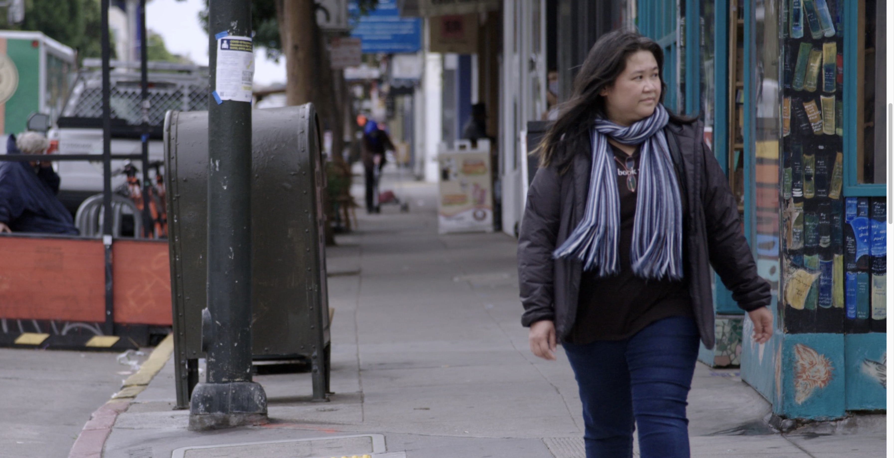

Associate Producer
The Dao in Thao 2026

"The Dao of Thao is a feature documentary that follows comedian and solo performer Thao P. Nguyen as she creates her next one-woman show. Set largely in Stage Werx, an intimate, independent theater in San Francisco's Mission District, the film captures Thao over two years as she crafts new material shaped by the complexities of her life as a queer, Asian American refugee, daughter, wife, and mother."
Visit Project Site →